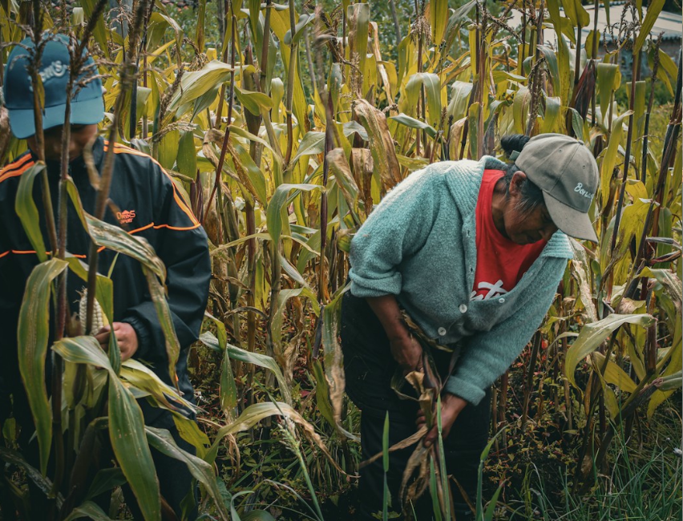

Desde el corazón de Putumayo
Del campo a tu mesa,
con raíces.
Alimentos honestos, cultivados por una familia campesina en el Valle de Tamabioy.
Sin intermediarios, con origen y propósito.
COSECHA DE ESTA SEMANA
Directa de la finca: Entregas los viernes
Cultivo campesino
Prácticas que cuidan la tierra
Origen transparente
Sabes quién cultiva tu alimento
De la finca a tu hogar
Fresco y sin intermediarios

3 generaciones
sembrando futuro
UNA HISTORIA QUE SE CULTIVA
Somos familia.
Somos familia.
Somos territorio.
En una pequeña finca entre montañas, la familia Jacanamejoy cultiva como lo hicieron sus abuelos: respetando los tiempos de la tierra, guardando semillas y compartiendo la cosecha. Cada compra impulsa una forma más justa de conectar el campo con la ciudad.
Conoce a la familia